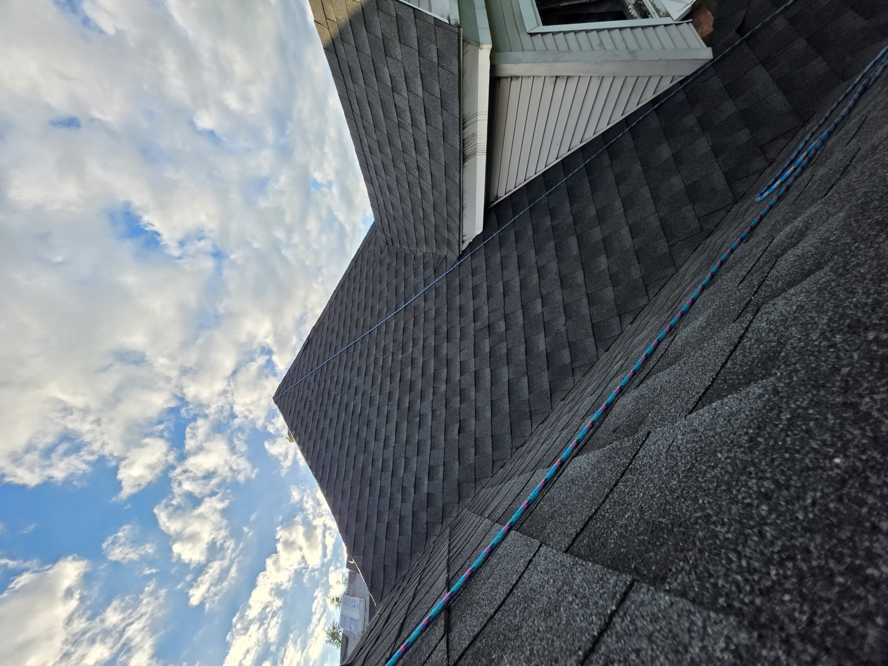

PSI Construction · Kingston & Wilkes-Barre, PA
Shingle Roofing Contractor — Replacement & New Roofs in Luzerne County
We roof the houses we build, and we re-roof the ones we don't. Decking checked and replaced where it's gone, ice-and-water at the eaves and valleys, flashing done properly at every penetration — then the shingles. The part that keeps the water out is underneath.
How it goes
How we replace a roof
-
1
Inspect & quote
Decking, flashing, ventilation and the age of what's there. A fixed price, not an estimate.
We get on the roof and in the attic. Decking condition, existing layers, flashing, valleys, ventilation, chimney and vent penetrations, and the age and type of what is up there all go into a written scope. You get a fixed price for that scope — with a stated allowance for decking replacement — not an estimate that grows once the shingles come off.
-
2
Tear-off
Old roofing stripped, decking exposed and checked board by board.
The old roofing is stripped to the deck in sections we can dry-in the same day. Debris goes straight into a container with the landscaping and siding protected. Every board of exposed decking is checked for rot, delamination and loose fastening.
-
3
Deck repair
Soft or rotted sheathing replaced before anything goes over it.
Soft, rotted or delaminated sheathing is cut out and replaced with new plywood or OSB of matching thickness; loose decking is re-nailed. Nothing goes over a bad deck — a new roof is only as good as what it is fastened to.
-
4
Underlayment & flashing
Ice-and-water shield at eaves and valleys, synthetic underlayment, new flashing at every penetration.
Ice-and-water shield at the eaves, in the valleys and around penetrations where ice dams and wind-driven rain attack; synthetic underlayment over the rest. New drip edge, step and counter flashing at walls and chimneys, new pipe boots and vent flashings. Flashing is where roofs leak, so it is all new, not reused.
-
5
Shingles & ventilation
Architectural shingles laid to the manufacturer's spec; ridge vent and intake balanced.
Architectural shingles are laid to the manufacturer's specifications — starter course, nail placement and count, exposure and offset — which is what keeps the warranty valid. Ridge vent is cut in and matched to intake ventilation at the soffits so the attic breathes and the shingles last their rated life.
-
6
Clean up & warranty
Magnet sweep, haul-away, warranty paperwork in your hand.
The site is swept with a magnet for nails, gutters are cleared, debris hauled away, and we walk the property with you. You receive the manufacturer's warranty registration and our workmanship warranty in writing, with photographs of the finished roof and the work under it.
Get a quote
Tell us about your roofing project
A few multiple-choice questions so we show up already knowing the job. Every one has a “not sure yet” option. Or call — 570-338-8PSI (774).